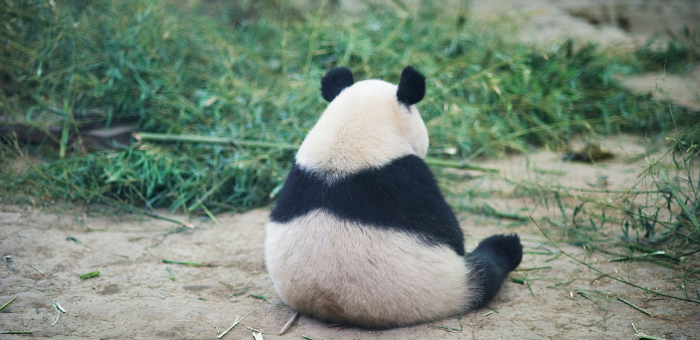

Jonathan's Four Favorite Animals
This is a Red Eared Slider, this is my
favorite animal because they love to
sunbath and swim around. They tend to
shy away from people and sudden
movements as well as sounds.

This is a Panda, also know by some as
one of the most lazy animals on the
planet, they love bamboo and long
naps.
This is a Persian Cat, these things
look super grumpy and that usually
defines my mood pretty well. I also
love cats and dogs in general.
This is a Phat Bunny, this is not a
real bread of bunnies, but rather
what I like to call a bunny